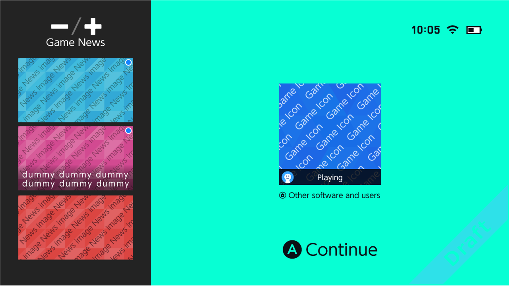
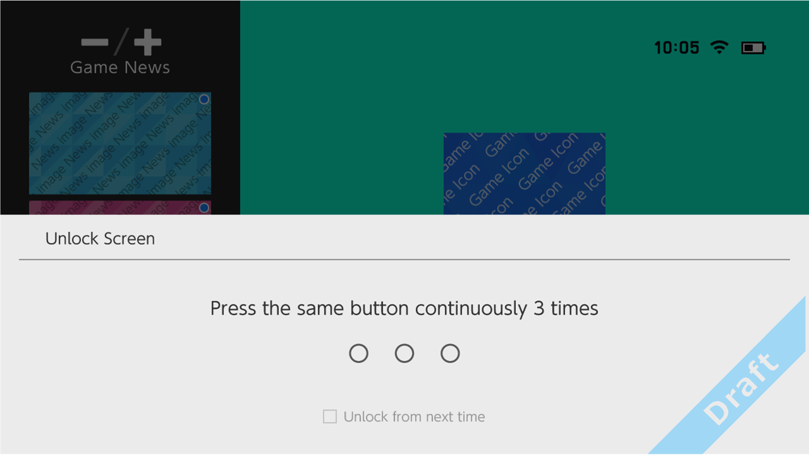

This screen is the welcome screen that is shown after turning on the system power or returning from sleep.
The following screens appear when you enter sleep mode while the application is running.

You can do the following, primarily. When you enter sleep mode while using the system features.
You can either press the A Button or tap the application icon to resume the application that was being played before the system was put to sleep.
A list of identified news items is on the left. Jump to game news by pressing (or tapping) either the - Button or + Button. You can jump to a screen with the news in detail by tapping the game news picture.
The application icon is a picture that appears in the HOME Menu, which is used to start an application. Application icons that have been created for the HOME Menu are automatically applied in the system. Sizes cannot be changed. For more information, see the Application Icon Creation Manual.
Application icons are not displayed in the Entrance. The icons for system features that were running before entering sleep mode are displayed. Use either of the following options to resume a paused system feature.
After the preceding screen, an Unlock screen appears to prevent erroneous operations.
If the system is placed into a bag, and is accidentally awoken from sleep mode, this screen prevents games from being unknowingly played.
You jump to the screen you want to resume by either pressing the same button three times or by tapping the touch screen three times.
You can also use the system settings to disable this feature.

CONFIDENTIAL